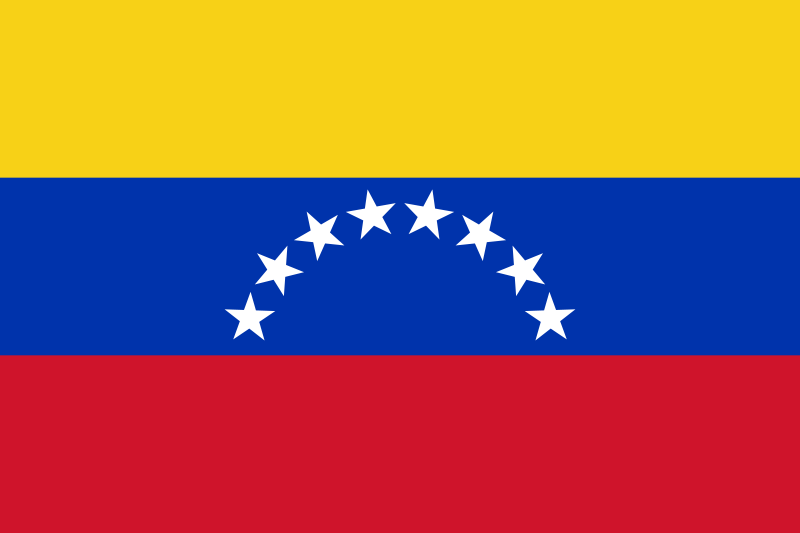

Venezuela officially known as Bolivarian Republic of Venezuela, was a Spanish-speaking country that once inhabited northern South America. Venezuela produces a large amount of oil every year, and has one of the largest oil supplies in the world. Making it an important US ally and strategic asset throughout the 21st century.
Venezuela's modern history was shaped by a number of people, including President Romulo Betancourt, who replaced a military dictatorship with a democracy. By the 1970s, Venezuela had become rich off of oil revenue, but it had problems in the 1980s and 1990s. In 1999 Hugo Chávez became president and tried to remake Venezuela as a socialist state. While popular at first, the economic changes Chavez and the next president, Maduro passed caused a massive economic depression in the mid 2010s. This eventually resulted in an increasingly authoritarian government, which would led to a crisis that would shift the nation's international stance throughout the 21st century.
History[]
Early History[]
Venezuela's inhabitants were very racially mixed. This comes from the colonial period. When whites (the British, Spaniards, French, etc.) conquered America's territory, they took their black African slaves to America to work. During Venezuela's colonial time, those from Africa did not have any rights. The native people were taught Roman Catholicism. For a long time, white creoles, people in Venezuela that were descended from Spaniards but considered Venezuela home, headed society. This would lead to a rebellion that would lead to the day of July 24, 1823, where Venezuela won its independence, led by Simón Bolívar.
Presidential Crisis and Conflict[]
By the mid 2010s, Venezuela's economy had been dependent on petroleum exports for nearly a century, and traded overwhelmingly with its neighboring nations.
In 2015, the United States Oil and Natural Gas Boom had grown to a point to cause a 40% drop in oil prices, known at the time as the 2015 Oil Glut. With over 93% of all exports being connected to petroleum, Venezuela's economy was devastated by the increase in US production.
By 2018 the crisis had grown to the point where food shortages and civil unrest were common. The Parliament was dissolved and the Presidential election faced evidence of widespread fraud. An opposition government named Juan Guaido, leader of the Venezuelan Opposition and the legitimate President. Venezuelan Opposition, boosted by foreign and military aid, eventually won out when Maduro was eventually ousted. The US offered foreign development loans to diversify the Venezuelan economy and prevent Chinese and Russian interests from gaining a toehold in the Western Hemisphere.
Foreign investment would eventually fuel a mining boom in Venezuela.
The Flood[]
Main article: The Flood
Rising sea levels displaced millions from the densely populated coast, and forced many to relocate to the United States, or into the country's interior, forming massive refugee camps. The Great Famine eventually led to social revolution that deposed the Guaido regime for one that marshalled the country behind deforestation and industrialization practices in the Orinoco basin, creating grazing land for cattle and diversifying the nations' economy.